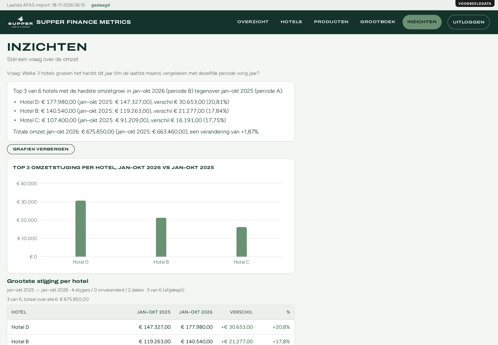
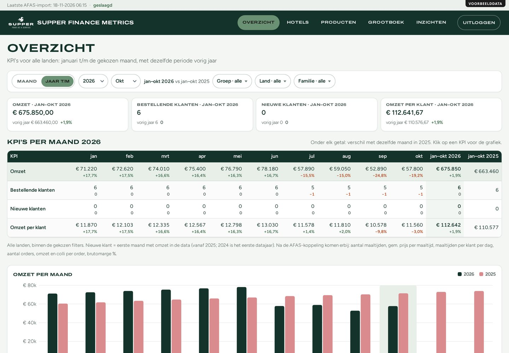
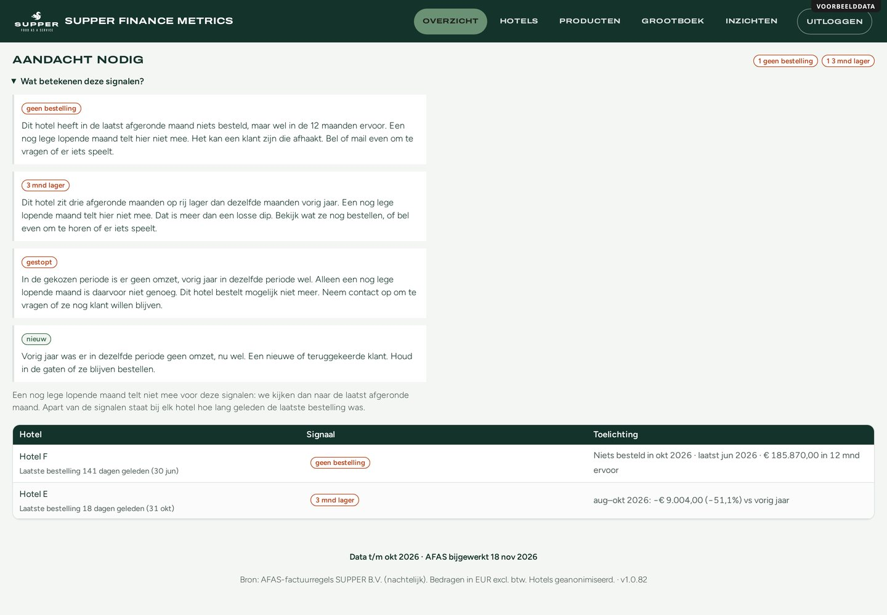
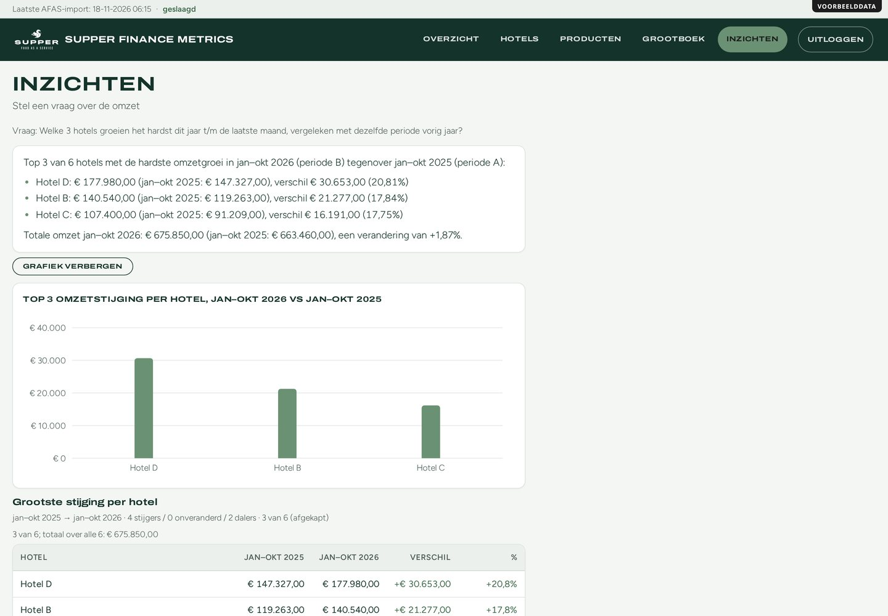

Case
Omzet per klant en product, elke ochtend bijgewerkt — Supper
Supper hield de omzet bij in een Excel-bestand. Voor elke vraag moest er eerst een export uit AFAS komen. Nu opent het team een dashboard dat elke nacht zelf bijwerkt.



Vraag
Elke vraag over omzet begon met een export
Supper levert aan hotels. De omzetcijfers stonden in AFAS, maar wie wilde weten hoe het ging, werkte in een Excel-bestand met tabbladen per jaar, per maand en per product. Dat bestand klopte alleen als iemand er eerst nieuwe gegevens uit AFAS in had gezet.
Een simpele vraag als “doet dit hotel het beter dan vorig jaar?” kostte zo eerst werk, voordat er een antwoord was.
Wat ze nu kunnen
Inloggen en het antwoord staat er
Elke nacht haalt het dashboard de nieuwe factuurregels uit AFAS op. ’s Ochtends staan de cijfers klaar, zonder dat iemand iets hoeft te exporteren. Daarmee zie je in een paar klikken:
- Hoe de omzet ervoor staat, per maand of tot nu toe dit jaar, en altijd naast dezelfde periode vorig jaar.
- Welke hotels groeien en welke teruglopen. Hotels die aandacht nodig hebben, staan apart gemarkeerd.
- Wie welk product koopt, en hoe dat per maand verandert.
- Hoe het aansluit op de boekhouding, met de omzet per grootboekrekening.
Een vraag die er niet tussen staat?
Stel hem gewoon in het Nederlands
Onder Inzichten typ je je vraag, bijvoorbeeld welke hotels dit kwartaal minder bestelden. Je krijgt een kort antwoord met een tabel of grafiek. De cijfers komen rechtstreeks uit dezelfde gegevens als de rest van het dashboard; de AI rekent niets zelf uit.

-

Per hotel: wie groeit en wie loopt terug · Voorbeelddata, geen echte cijfers -

Eén hotel: omzet per maand · Voorbeelddata, geen echte cijfers
Aanpak
Begonnen bij het Excel-bestand dat ze al gebruikten
De tabbladen uit Excel werden de eerste schermen. Na de eerste dag stond er al een werkende versie met login. Daarna breidde ik het stap voor stap uit: een overzicht per hotel, de vraagfunctie en de nachtelijke koppeling met AFAS. Binnen 39 dagen draaide alles op AFAS en was Excel niet meer nodig.
- Het dashboard leest alleen. In AFAS verandert er niets.
- Iedere gebruiker logt in met een eigen account.
- Een gefilterde weergave deel je met een link.
- Mislukt de nachtelijke update, dan zie je dat meteen in het dashboard.
De schermafbeeldingen op deze pagina tonen voorbeelddata, geen echte cijfers van Supper.
Apart van dit dashboard beheer ik ook de webshop van Supper Services.
Herkenbaar?
Bouw jij ook elke week een overzicht in Excel?
Laat zien welk bestand je nu bijhoudt en welke cijfers je elke week nodig hebt. Dan kijk ik of een dashboard op je eigen gegevens past. Soms is een beter ingericht Excel-bestand genoeg; dan zeg ik dat ook.